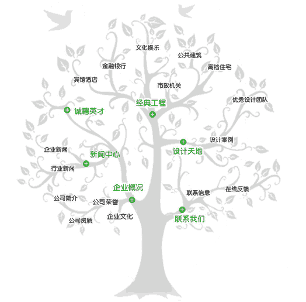
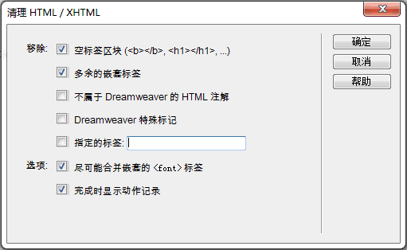
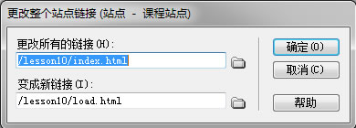
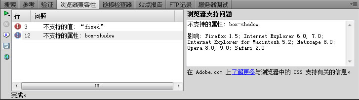
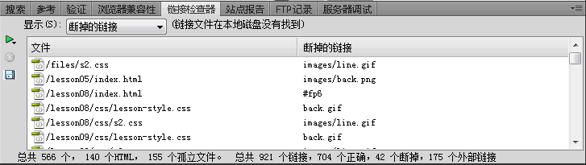
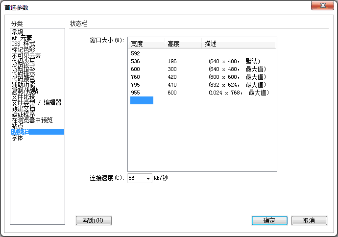
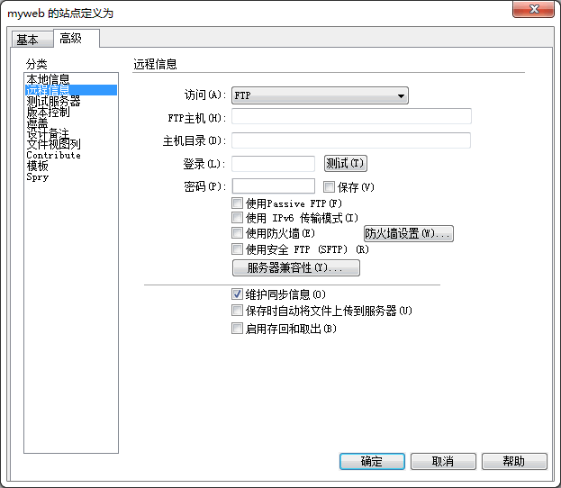

网站的建立与优化
网站的建立
| 步骤 | 说明 |
|---|---|
| 网站定位 | 选择网站主题，考察浏览者定位 |
| 收集素材 | 收集相关的文字、图像、声音等 并对文字进行编辑修改，对图像进行处理加工 |
| 规划栏目 | 提纲挈领，清晰导航  |
| 页面方案 | logo、标准色彩、标准字、导航条和首页布局等 可用PS绘制页面效果图 |
| 页面制作 | 确定页面大小：如宽度基准1024时可设998，内容自动居中 |
网站文件夹结构
网站文件夹结构原则：以最少层次提供最清晰合理的文件夹结构。这样方便管理，浏览器的路径也保持较短。
- 本地建立一个网站总文件夹，网站中的所有文件分类存放在该文件夹下；
- 总文件夹下按文件类别分类，设子文件夹。如：
- images——图像文件
- css（或style）——css样式文件
- media——动画或多媒体文件
- js（或script）——JavaScript脚本程序
- 二级页面分类文件夹（如各类二级页面较多时）
- 总文件夹下仅放html文件，且总文件数不超过10个；
- 所有文件与文件夹的命名原则“见名思义”，但均不用中文命名。
网站的优化
精简网站容量与整理优化HTML代码。
清理无用文件
网站制作过程添加到站点中但又没用到的图片、动画与文档，以精简网站容量。
整理HTML代码
在制作网页过程中，会产生很多无用代码、垃圾代码、甚至错误代码。
命令->清理XHTML

命令->清理word生成的HTML
上传网站之前，需要清理网页中无用、错误的HTML代码，减少网页中的错误，提高网页浏览效率。
改变站点范围的链接
网页中的链接是相互的，改变一个链接，其他网页中的有关链接也会改变，“改变站点范围的链接”命令可实现链接的批量修改。
站点->改变站点范围的链接

网站优化
对网站进行程序、内容、版块、布局等多方面的优化调整，适合搜索引擎检索。
注意：优化前备份网站，免得误操作后造成信息丢失
练习1：对递交到百度云盘的个人网站，修正文件夹结构，进行代码清理。
网站的本地测试
- 对于静态网站，主要测试页面设计、文字内容、图片、超级链接等；
- 对于使用服务器数据库技术的动态网站，要测试服务器的运行环境、网站程序的稳定性、数据库系统的可靠性、服务器与客户端的交互功能等项目。
浏览器兼容性测试
检查文档中是否有目标浏览器所不支持的任何标签或属性（如页面中的样式、层、插件或JavaScript）等元素。
窗口->结果->浏览器兼容性

链接测试
链接测试：窗口->结果->链接检查器
- 检查网页链接
- 检查本地站点某部分中的链接
- 检查整个站点的链接

修复链接
在“结果”面板中可以修复检查到的断掉的链接。
代码验证
窗口->结果->验证
检测下载速度
DW会根据页面所有链接的对象，如图像和插件等来检测下载速度（状态栏上显示）。
编辑->首选参数->状态栏->设置网络连接速度

网页的下载时间一般实行“8秒钟”原则，即大多数用户等待载入一个页面的时间不超过8秒钟。
练习：找出以前制作过的“我的空间”的网站，进行测试和完善。
申请空间与域名
网站空间租赁
申请免费空间
可从百度贴吧找一个靠谱的免费空间
申请收费空间目前提供收费空间的网站托管机构很多：
- 国外空间，如：万联网络、三蛋（000webhost）、艾堡主机等
- 国内空间，如：中国互联网、各省的电信或网通网络、城市在线等均提供收费网站空间及网站托管服务。
相关参数：
- 空间大小
- 空间的功能支持
- 流量限制
- 可建网站数量等。
申请网络域名
申请好主页空间之后，还必须有相应的域名才能够访问网页。
- 域名由域名管理机构管理，域名是全球惟一的。
- 申请并使用一个域名，必须定期向域名管理机构支付相应费用。
- 域名是按地理域或组织域进行分层管理的，各层间用“.”隔开，域名依次从小到大，如“www.sina.com.cn”中，顶级域名为“cn”（地理域），次级域名为“com”（组织域），三级域名为“sina”。
网站上传发布
发布站点也叫上传网站，以远程文件传输方式上传到服务器中申请的域名下。
- 直接在资源管理器中上传
- 使用FTP协议来上传，用FTP软件（如CuteFTP等）或直接在资源管理器下拷贝。
- 使用Dreamweaver提供的上传/下载功能对网站进行发布。
资源管理器
添加网络位置到资源管理器：打开资源管理器->计算机->添加一个网络位置：
- 指定网站位置
- 匿名登录或用户名
- 网络位置名称
上传站点：如本地操作一样复制文件到设定的位置
DreamWeaver
配置远程信息：站点->管理站点->选择站点后编辑

上传文件：文件面板->选择站点->上传
网站制作实训
利用课程剩余的时间，运用网页设计与制作技术，制作出含有一定技术含量、包含一定信息容量的静态网站。
实训任务
- 确定主题，站点规划，搜集资料；
- 构思网页布局和配色，PS设计主页效果图和二级、三级页面的效果图；
- 根据主页效果图，制作主页（从banner到整页）；
- 根据二级页面效果图，制作由主页可链接到的二级网页；
- 如有三级页面的，继续制作由二级网页可链接到的三级网页；
- 网页优化。链接正确得当，无多余文档，亦无文件丢失，动态效果恰当；
- 网站测试并递交，尽可能申请空间上传发布。
实训要求
- 自选主题，有一定信息容量，总页面应在6~12页之间；
- 网站结构规划合理，首页与二级页面设计导航栏（或导航条），保证所有页面可达可返；
- 页面布局合理，色彩和谐；
- 文件夹组织得当，文件夹和文件命名符合见名思义，不用中文；
- 运用CSS样式设置页面元素（文字、表格、图片等）；
- 恰当使用动态技术，包括行为、嵌入JavaScript代码等（不要过多使用）。
上交报告Read.doc格式
《××××××》网站设计与制作
学号 姓名
一、前言
- 选择该题材的缘由
- 设计进程安排
二、 总体设计
- 说明设计思路
- 给出网站地图
- 配色和布局的考虑
- 首页效果图
三、详细设计
- 导航栏的设计与制作
- 首页制作说明
- 二级页面的制作说明
- 网站采用的主要技术
四、结束语
- 自我评价：网站实现了那些目标，有何改进之处
五、课程学习总结
- 学习总结
- 建议
报告3页以上，必做! 此文档应放在index.html同目录。
| Last | Home | Next |
©2012-2018 Yang Peili. All rights reserved. contact me